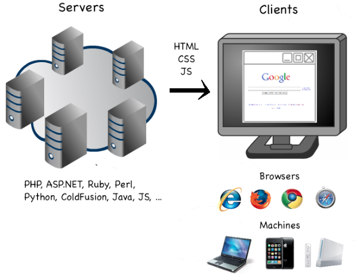

Web development is any kind of programming that's meant to run on the web.
- Basic pages
- Simple forms
- REST APIs
- Entire applications
- Angry Birds
Web development is any kind of programming that's meant to run on the web.
https://en.wikipedia.org/wiki/File:Web_development_timeline.png
Servers are a central repository of content that responds to client requests.
Clients request content from servers.
Types of client:
explain http and what a protocol is. SYN/SYNACK/ACK
Scripts that run when a user makes a request, to serve a file. There are many languages, including (but not limited to):
list languages, describe them
While there are fewer mainstream client-side languages, scripting still happens on the client as well. The client-side scripting is part of the file that the server sends to the client.
explain javascript on the client vs javascript on the server
You will often hear of a framework alongside a language. They aren't languages, just libraries that are really large and very popular that allow you to work with the web.
explain what frameworks are! Like a phrasebook for a language.
Node is a web framework that is very minimal. It provides an API to send data and run a server process in JavaScript. After that, much of it is up to you.
Many more mature languages (like Ruby, or C#) hide a lot of what is going on. Node doesn't hide much from you, but this makes you powerful.
"With great power comes great responsibility" -Spiderman

Who knows more about webs than spiderman?
If you've done web programming before, you probably didn't have to handle your own:
But because you're handling these things, you get to say how they are done.
An example of a node.js server!
var http = require('http');
http.createServer(function(request, response){
response.writeHead(200,{'Content-Type':'text/plain'});
response.end('Hello World\n');}).listen(8124);
console.log('Server running at http://127.0.0.1:8124/');
Open a text file, call it server.js - paste this in.
Let's break it down.
var http = require('http'); //A Module
//using http's method to create a server that listens on port 8124
http.createServer(function(request, response) {
//Inside a callback, we write the request header
response.writeHead(200,{'Content-Type':'text/plain'});
//we then end the response, sending along with it a response body.
response.end('Hello World\n');
}).listen(8124);
//Our old friend, console.log
console.log('Server running at http://127.0.0.1:8124/');
Mention that the callback responds to "request" events - if you pass the name of the function it will get called, and be give the arguments "request" and "response".
Ports are like sub-addresses on your computer, or a server. A socket is a combination of an IP address and a Port.
In the previous example, 8124 was the port we were using, on 127.0.0.1.
Servers "listen" on ports - they tell the OS that if information comes in on that Port, they will handle it.
80 is the default HTTP port. A further list of ports can be found here
http://ortizonline.com/publications/tcpipsuitetutorial.htm
A request is composed of two parts. A Header and a Body. It is sent to the server, and explains what the client is requesting, and how it wants a response.
GET /index.html HTTP/1.1
Host: www.example.com
The last two lines are blank on purpose. The client has to send two blank lines (/r/n /r/n) in order to signal that the request has completed.
explain /r/n and that there can be more HTTP headers than just the path.
The request head defines several things:
HEAD just asks for the headers, without the body.
Sometimes, you'll have a request body. This is used to send data, like the contents of a form or some authorization data. It is sent with POST.

GET is an HTTP Verb that we use to request information. We may optionally pass a "QueryString" with our GET request (or with post requests) in order to send data that we're OK with the user potentially modifying.
POST is another Verb that we use in order to send a response body with - usually data from a form. The user can't directly modify this data but as you've seen, you can modify the page, so you can get any kind of data from a post.
In node, the "path" is sent along with the request. This path helps us know what the user was trying to access.
A server can "listen" on a path, but it is better to parse the URL and then respond.
root = '/';
a_directory = '/slides';
a_file = '/intro.html'
a_directory_and_a_file = '/slides/intro_to_web_programming.html';
Responses are what we'll be constructing to send to the requestor. They contain a Body and a collection of Response Headers.
HTTP/1.1 200 OK
Date: Tue, 04 Dec 2012 06:02:17 GMT
Expires: -1
Cache-Control: private, max-age=0
Content-Type: text/html; charset=ISO-8859-1
There are many response headers, which we'll go over as we need them. A full listing can be found here.
HTTP responses come with an easily machine-readable code. There are several common ones:
Generally, ranges denote success, errors, or redirects. A full list can be found here
A response body is what your browser displays to you. It's often composed of HTML, but it can be an image, some CSS or JSON.
<= Recv data, 13416 bytes (0x3468)
0000: 35ef
0006: <!doctype html><html itemscope="itemscope" itemtype="http://sche
0046: ma.org/WebPage"><head><meta content="Search the world's informat
0086: ion, including webpages, images, videos and more. Google has man
00c6: y special features to help you find exactly what you're looking
0106: for." name="description"><meta content="noodp" name="robots"><me
And so on.
In cloud9IDE or Terminal on your Mac, paste the following command. Then, open up debugdump.txt
curl --trace-ascii debugdump.txt http://www.google.com/
Set up several routes, interpret a request. Bonus, log each time a user comes to the page